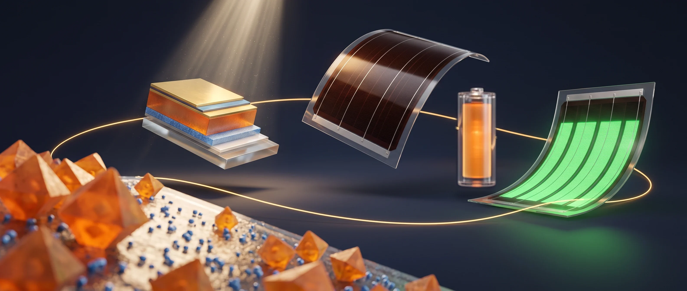
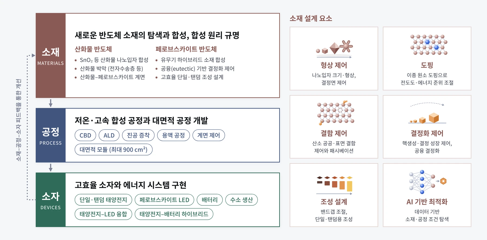
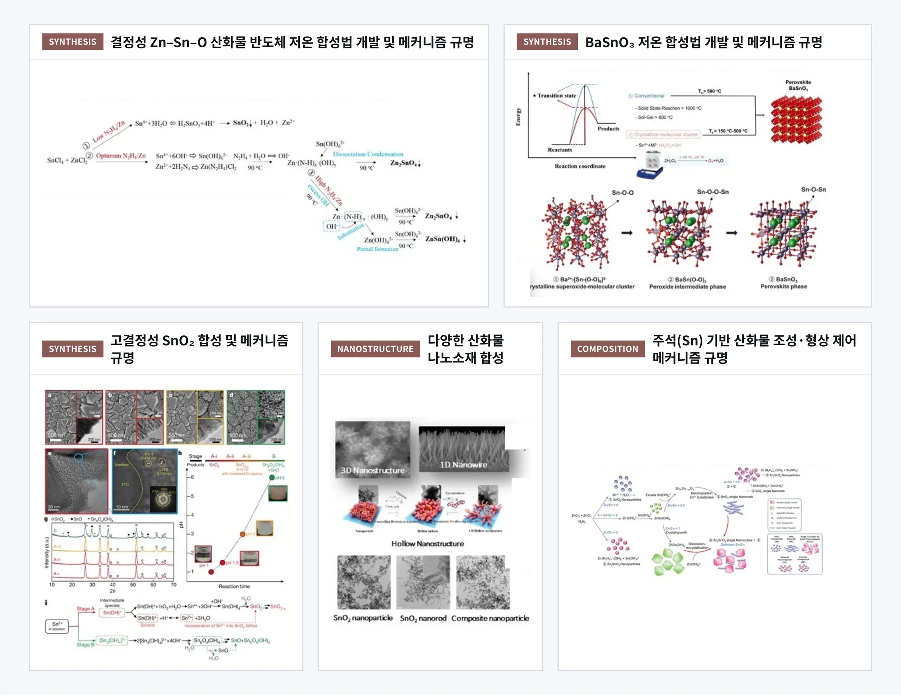
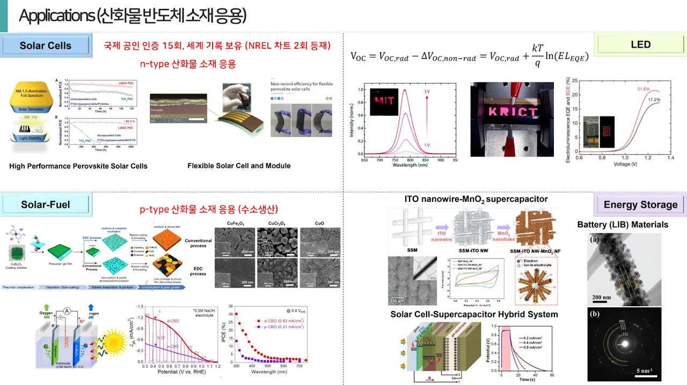
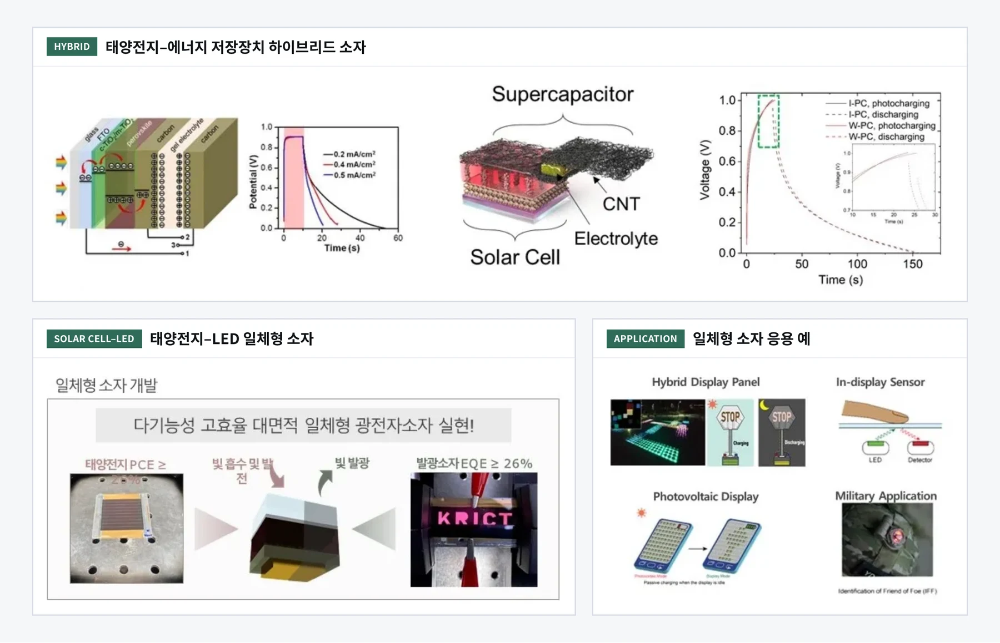
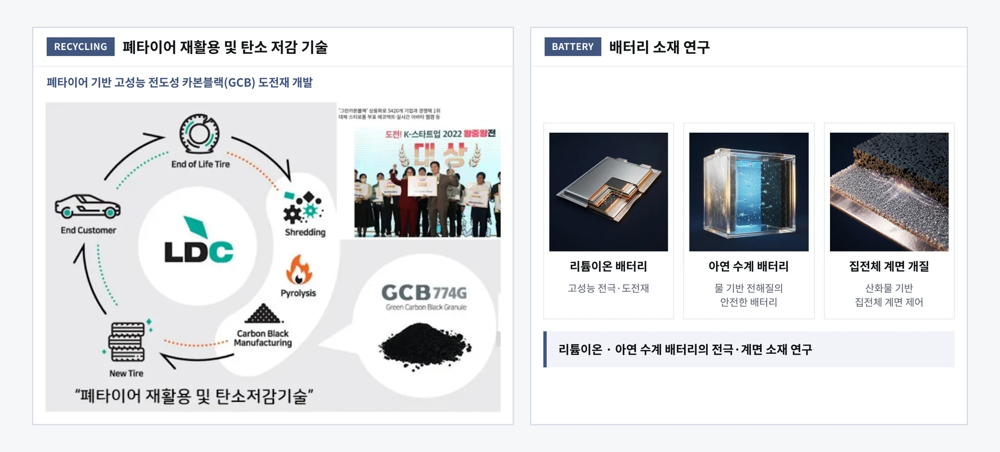

Research
Research
산화물 반도체와 페로브스카이트 반도체 소재의 합성 원리를 규명하고, 이를 고효율·대면적 태양전지, 발광다이오드, 배터리와 하이브리드 에너지 시스템으로 확장해 우주, 건물, 차량, 실내 IoT 등 다양한 분야로의 응용을 지향합니다.

1산화물 · 페로브스카이트 소재2태양전지 · 탠덤3대면적 플렉서블 모듈4에너지 저장 (배터리)5발광 (LED)- 산화물 · 페로브스카이트 소재
- 태양전지 · 탠덤
- 대면적 플렉서블 모듈
- 에너지 저장 (배터리)
- 발광 (LED)
01
Oxide & Hybrid Semiconductor Materials
새로운 산화물 반도체와 유무기 하이브리드 페로브스카이트 반도체 소재를 탐색하고 합성합니다. 저온·고속 합성 공정과 대면적 공정을 개발하고, 합성 원리와 소재 간 계면을 규명해 고성능 에너지 소자의 기반을 만듭니다.
- Oxide Nanoparticles
- Oxide Thin Films
- Hybrid Perovskite Materials
- Solution & Vacuum Processes
- Interface Engineering


02
Perovskite Optoelectronics: Large-Area & Flexible
산화물 전자수송층을 기반으로 고효율 페로브스카이트 태양전지, 페로브스카이트/페로브스카이트 탠덤 태양전지, LED를 만들고, 이를 최대 900 cm² 대면적 플렉서블 모듈과 태양전지–LED 양방향 융합 소자로 확장합니다. 태양전지–배터리 하이브리드 시스템도 함께 연구합니다.
- Perovskite Solar Cells
- All-Perovskite Tandem Solar Cells
- Flexible Perovskite Solar Cells
- Large-Area (Flexible) Solar Modules
- Perovskite LEDs
- Solar Cell–LED
- Solar Cell–Battery
- Solar Cell–Supercapacitor
- Solar Cell–Water Splitting



03
Sustainable Battery Materials
리튬이온전지와 물 기반 전해질을 쓰는 안전한 차세대 아연 수계 배터리, 그리고 폐타이어를 재활용한 고성능 전도성 카본블랙 도전재 등 지속가능한 배터리 소재를 연구합니다.
- Li-ion Batteries
- Aqueous Zinc Batteries
- Conductive Carbon Black from Waste Tires
- Solar Cell–Battery Hybrids
